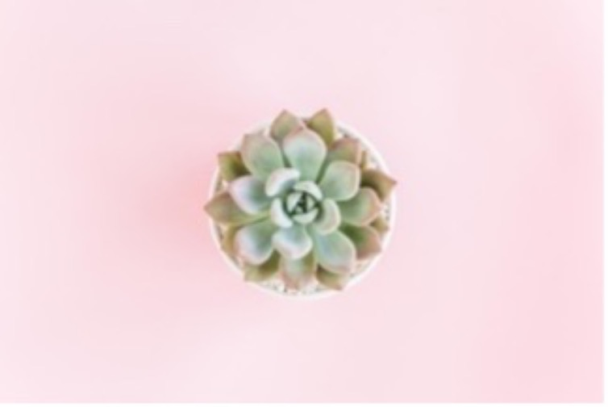
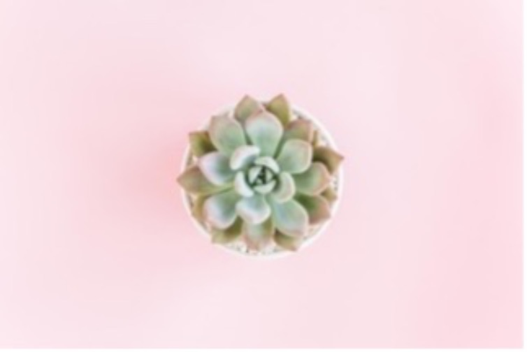
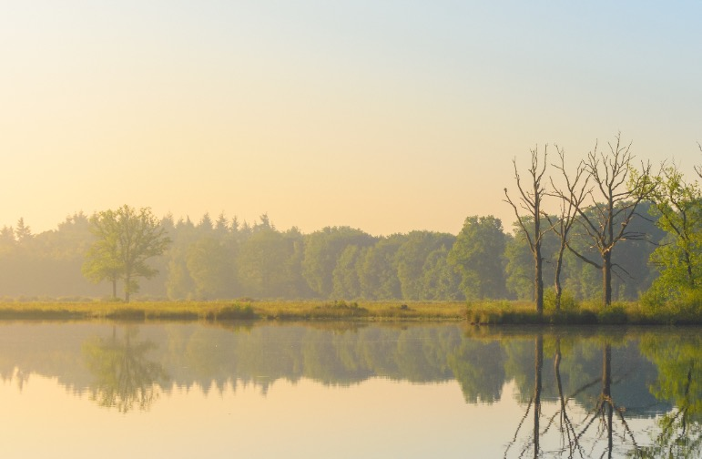
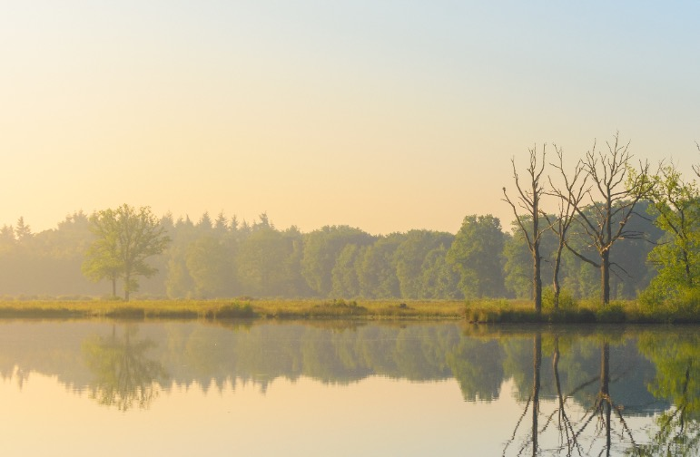

Inspiration
Succulents
You might be wondering why succulents? Succulents aren’t only beautiful, but they can tolerate dry, indoor conditions. Our pajamas are like succulents; they can resist anything! Also, succulents don’t need much water, and our pajamas are so soft and comfortable that you might need to take good care of them. Succulents are living sculptures, if you want to decorate your house without having to use anything else but plants, this is a good option; just as our pajamas are a perfect combination of everything you need to feel complete.

 

Rivers
River has usually been used as a metaphor for life to compare or identify different areas and aspects of life. But, why using a river as an inspiration for our pajamas? Well, rivers start off slowly, usually picking up speed and power as they crash over rocks or rush downhill. We believe our pajamas to be like rivers they give that vibe of getting better at encountering challenges, and if you are lucky, those obstacles will strengthen you. We genuinely want our pajamas to offer you more than you have ever expected.
 
